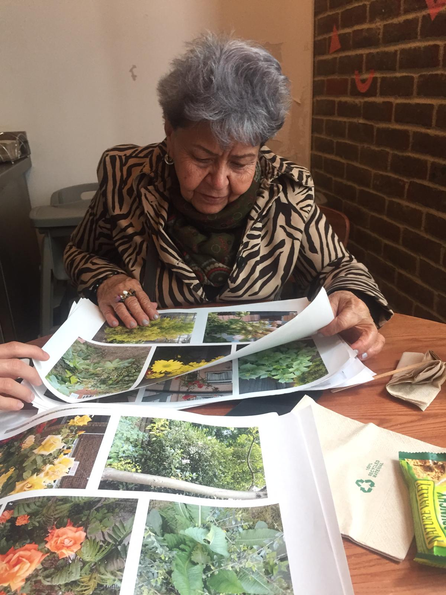

⤷ GEOLOGIC SUBJECTIVITIES ⁘ writer and researcher, collaborative performance libretto, Trienal de Arquitectura de Lisboa ⁘ 28.10.2019

Geologic Subjectivites: An Archaeology of the Unthought
The libretto was used as a script for an interactive performance, based on an operatic multi-character narration of genome mining in the Mid-Atlantic Ridge. The script was written as a response to the theme of the Lisbon Trienal, The Poetics of Reason. It recounts the journey of a Pyrolobus Fumarii, a deep-sea bacteria and crucial ingredient of new cosmetics, in its encounter with austerity policies, deep-sea investment, Portuguese 'offshore' territories, and colonial, still powerful, racialized themes of 'discovery and exploration.' Collaborative research and writing with Lodovica Guarnieri; performance by Catarina Vieira.
⤷ PARAMETRIC APPREHENSION ⁘ researcher and web designer, archival website ⁘ 30.09.2019
The concept of parametric apprehension emerged out of my investigation of solar geoengineering. It is an intervention in the practice of risk assessment, and it seeks to intentionally select precedents or records that have the capacity to produce alternative parameters for the calculation of toxic risk. In order to do this, the website offers a future-oriented timeline that juxtaposes archival materials and existing and fictional documentation. The selection of materials is limited to the risks or fears that have made themselves present to me. The website suggests that to apprehend some futures by fearing them (parametric apprehension) does not mean to predict them with accuracy but to play in the game of preemption at a time when apprehensive planetary terraforming is sought by the current assemblage of racial capitalism.
⤷ LINES OF INQUIRY ⁘ book editor and contributor, Centre for Research Architecture ⁘ 21.09.2019
The book features original contributions from the 2019 graduates of the Forensic Architecture Studio. Following a year’s worth of collective work in crits, informal reading groups, and studio-practice, the glossary offers conceptual propositions that articulate the case studies we investigated. In the field manual, one finds strategies developed on the fly for materially intervening in political contexts, often in the course of field and remote investigations. The structure of this book reflects the parallel skills required by such a double task: imaging and imagining, seeing and naming. As one of three editors and a contributor, I co-wrote the introduction to the text, supported and reviewed my peers' submissions, and furnished my own operative concept and field manual instructions.
⤷ WILDFLOWERS IN LONDON ⁘ researcher and co-organiser, participatory citizen science project, University College London ⁘ April-July 2019

Citizen Science project carried out with Sanayah Malik in collaboration with a group of 8 elderly Latino women, long-term residents of London. Supervised by the ExCiteS Research Group at UCL. We supported the participants in designing a digital monitoring project based on their interests, in this case, photographing and geolocating wildflowers in London. The project included a series of participatory design sessions. First, in order to structure the monitoring app according to categories chosen by the participants. Second, to design prototypes for Citizen Science visualization applications. The contributions and stories shared during the prototyping sessions, participant observation, and individual interviews led us to two basic interface prototypes, which will be used by the ExCiteS group at UCL to help the development of environmental research visualization tools.
⤷ TROUBLED SOIL ⁘ researcher and video co-producer, People's Tribunal, Lewisham Irish Community Center ⁘ 13.05.2019
Case study presented at “The Right To Not Be Bounded Thusly”, a People’s Tribunal hosted at the Lewisham Irish Community Centre. Troubled Soil investigated how border leakage emerges from its industrialized exploitation. Our investigation of Dalradian’s mining exposes the border not as a delimitation between two national sovereign bodies, but as a historical zone marked by displacement and dispossession. Land leased off and opened up to mining business, the Sperrins reveal the act of bordering as the demarcation of a sacrificial periphery. Here, we interpret the right to not be bounded thusly as a twofold reckoning: neither is it possible to contain the site of extraction and its toxics leakages, nor should those who inhabit such space be bound by the political decision to make them weather the impacts. Installation featured two documentary videos and an archival display.
⤷ IT'S NOT BIG BROTHER STUFF ⁘ researcher, Live Project, Goldsmiths, University of London ⁘ 30.10.2018